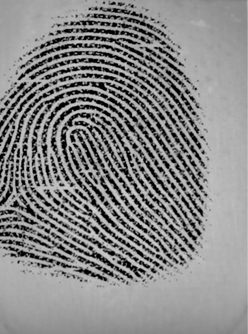
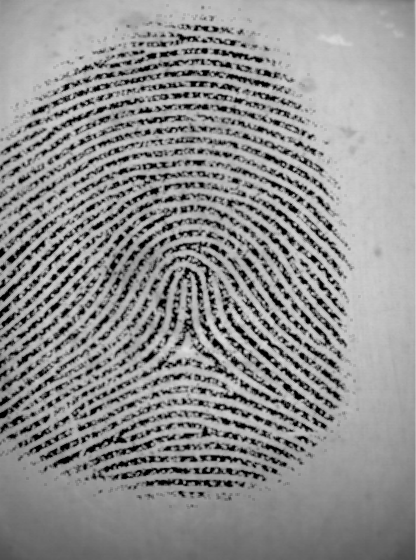
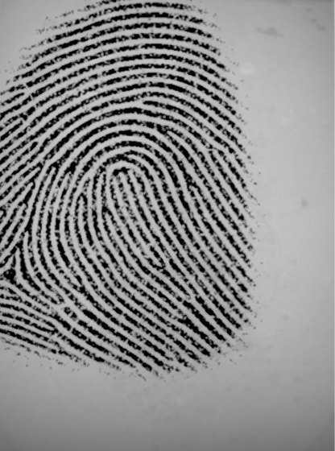
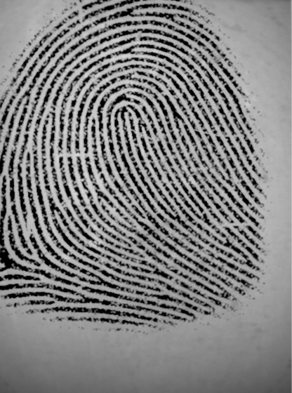
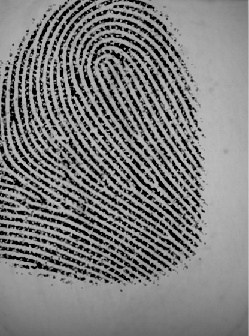
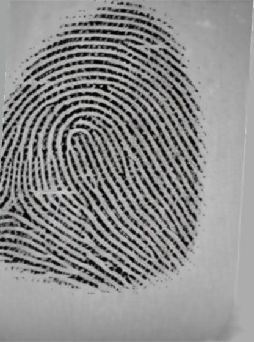

×
Fingerprint Comparison - Ghost Logoff
🧍 Suspect Lineup
← Back to Lab
Mark Ridge
Mark Bifurcation
Remove Mark
Clear All
For the best experience, press
F11
to enter fullscreen mode.

Unknown Partial Print

Marcus Ellery (Victim)

Suspect 1:
Eli Navarro

Suspect 2:
Mrs. Monroe

Suspect 3:
Mr. Weller

Suspect 4:
Tess Monroe